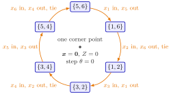

Cycling¶
Definition¶
A linear program with structural variables is degenerate when more than constraints (the sign constraints included) are binding in a corner point. In the (revised) simplex algorithm this shows up as a basic variable with the value .
The (revised) simplex algorithm cycles if it runs through a sequence of bases
and returns to a basis it has visited before. Since its pivoting rules make the same choices whenever the same tableau appears, it then repeats this sequence forever and never terminates. All bases of a cycle belong to the same corner point: every basis change in a cycle is degenerate, with step length .
Interpretation¶
Cycling means getting stuck at one corner point. The algorithm keeps exchanging basic variables that are all , so neither the point nor changes, and with the same tie-breaking it repeats a sequence of bases forever, even when better solutions exist.

The figure shows Example 1 below. Each arrow is one basis change, labelled with the entering and the leaving variable; after six changes the algorithm is back at . All six bases have the same basic solution in the middle, every step has length , and stays , although the linear program is unbounded (Example 2 below). The steps marked tie are the second, fourth and sixth, where two rows attained the minimum ratio and the lower row was chosen.
It can only happen with degeneracy. A basis change raises the entering variable to and by , where . As never decreases, a single step with in the sequence would make end higher than it started, which is impossible when the sequence returns to the same basis. So in a cycle every step has , which needs a leaving basic variable equal to : a degenerate corner point with more binding constraints than the that the nonbasic variables account for. Ties in the minimum-ratio test produce such zero basic variables, because only one of the tied variables leaves.
Degeneracy does not force cycling. Often one or more basis changes at the same point are followed by a move to a better adjacent corner point, as in Example 3 below. Cycling is the bad case in which the pivoting rules never find the exit. Since the tableau version and the revised version of the simplex algorithm visit the same bases, both can cycle.
OR Modelling meets the same phenomenon on its degeneracy page. A common misreading is that an algorithm which stops improving has reached the optimum; the linear program of Example 1 below cycles at although it is unbounded. Bland's rule changes the pivoting rules so that no basis is visited twice.
Key Results¶
- A basis change with step length strictly increases ; hence all basis changes in a cycle have , and all bases in the cycle have the same basic solution.
- Cycling requires a degenerate corner point, at which a basis change need not move to a new corner point.
- In Example 1 below, the most negative reduced cost entering and ties broken in favour of the lower row lead back to the initial tableau after six iterations.
- With Bland's rule, which always chooses the eligible variable with the smallest index, the (revised) simplex algorithm cannot cycle.
Examples¶
1. A cycle of six bases. Maximize subject to
and , with slacks . Both right-hand sides are , so every basic solution is the origin and every ratio is . The starting tableau is
With the most negative reduced cost entering and ties broken in favour of the lower row, the bases are : replaces , replaces , replaces , replaces , replaces and replaces . The second, fourth and sixth steps break a tie. After two steps the tableau is the starting one shifted two columns to the right, and after six steps it is the starting tableau again, with throughout.
2. Better solutions exist. The linear program of Example 1 above is unbounded: for the point gives and , with . The cycle never leaves . Solving the same linear program with Bland's rule detects the unboundedness after three iterations.
3. Degeneracy without cycling. Maximize subject to , , , , with slacks and starting basis at the degenerate corner . In the first iteration enters with ; the ratios are for and for , so leaves with . The basis changes to , but the basic solution is still the origin with : the leaving variable was basic with value . In the second iteration enters with , the ratios and make leave, and the algorithm moves to with ; a third iteration reaches the optimum with .
4. Tie-breaking decides. In the second step of Example 1 above both rows give the ratio . Breaking the tie towards the lower row lets leave and leads into the cycle. Letting leave instead, as Bland's rule does, gives a tableau in which the next entering variable has no positive entry in its column, and the algorithm stops with the conclusion that the linear program is unbounded.
Prerequisites¶
Related Concepts¶
- Bland's Rule
- Nonoptimality and Reduced Costs
- Simplex Tableau in Matrix Form
- Adjacent Corner Points
- Simplex Pivot
- Unbounded Linear Program
Sources¶
- Math VI: Convexity and Optimization · Week 6
- H. E. Nusse and M. Dienstknecht, Math VI: Convexity and Optimization, lecture notes 2026–2027, Section 6.3.2
Aliases: cycling in the simplex algorithm, simplex cycling, degenerate cycling Keywords: \mathcal{B}_0,\mathcal{B}_1,\dots,\mathcal{B}_q=\mathcal{B}_0, \theta=0, degenerate pivot, degenerate linear program, Hall and McKinnon example Symbols: theta
Last updated: 10 November 2026 16:43
CyclingBland's RuleBasis and Basis MatrixRevised Simplex AlgorithmDegeneracyMinimum-Ratio TestNonoptimality and Reduced CostsSimplex Tableau in Matrix FormAdjacent Corner PointsSimplex PivotUnbounded Linear Program